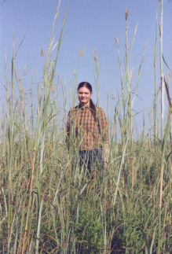

|  | Glossary of terms and |
|
Aged beef (old-time definition) - Refers to beef that is produced out of cattle -- heifers, steers, cows, or bulls -- that have already reached maturity and are no longer growing additional carcass. Old-time aged beef was out of cattle that were born, raised, and finished (fattened) on grass, and was never grainfed. Most old-time aged beef was produced out of either straight-bred and crossbred Texas Longhorn, Cracker, Hereford, Shorthorn, Angus, Jersey, and a few other breeds of cattle. Aged beef (modern-day definition) - Refers to beef that -- after slaughter and prior to processing -- has been held in storage for 10 to 30 or more days at a planned temperature and humidity. Modern-day aged beef may be either rangefed, pasturefed, or grainfed, and may be produced out of cattle of any breed, sex, age, weight, or size. Adapted cattle - Cattle most suited to their production environment. Animal unit - A 1,000 lb. (450 kg) beef cow with or without a nursing calf and having a daily requirement of 26 lbs. (11.8 kg) of dry forage. Animal unit equivalent - The calculated difference an animal of a different weight would exceed or fall below the standardized measurement of an animal unit. Biodiversity - The variety of life-forms that occur at genetic, population, species, community, and ecosystem levels. Sometime refers to the number and variety of organisms (life forms) existing in a specified geographic region, habitat, or environment. Breed (used as a noun) - A population of domestic livestock (cattle, horses, sheep, goats) that are maintained by controlled propagation and have common ancestors and certain distinguishable characteristics. Breed (used as a verb) - Causing to reproduce, especially by controlled mating and selection. May also mean to mate with. Business cycle - The financial upturn and downturn in the economy driven by demand and supply. Characterized by recession or depression, recovery and expansion followed by another round of either recession or depression. Capital - Refers to the resources (physical, biological, financial, and human) that are needed to develop, produce, and distribute goods and services for human consumption. The resources in question can be natural or man-made. Carbon credit - One ton of carbon stored in the soil and is equivalent to removing 3.67 tons of carbon dioxide from the atmosphere. Carcass merit - Refers to the qualities that reflect a beef carcass that produces a high percent of red meat that is highly desirable and/or highly palpable. There are two measures that are generally used to predict carcass merit. They are: (1) red-meat percent, which is predicted by USDA yield grade, and (2) palpability, which is predicted by USDA quality grade (determined primarily by marbling). It should be noted that yield grade is highly accurate for its purpose. Quality grade is not. Carrying capacity - The maximum number or weight of grazing animals that a particular parcel of rangeland can sustain over an infinite period of time, and do so without damaging the resource. This term is sometimes referred to as grazing, livestock or animal unit capacity. Cattle cycle - The period from one peak or valley in cattle numbers and prices to the next peak or valley. Cattle cycles in the U.S. average about 10 years. Cattle cycles and price cycles tend to be negatively or opposite related. Climate - The weather conditions that normally occur in one place, and include certain patterns of temperature, precipitation, humidity, wind, and seasons. Climate change - Refers to changes in weather conditions that normally last for a long period of time. Changes in climate can be either natural or man-induced. Climax - The last stage in terrestrial community (ecosystem) development. The climax stage usually is more structurally diverse, more productive, and more efficient in cycling nutrients than earlier stages of development. Closed population - Refers to a breeding population that is closed to genetic influences outside the boundaries of the population, both males and females. Closed breeding system - Refers to a breeding system where the dam and sire replacements for a breeding unit are born and raised within the same population. Genetic types for a closed breeding system should generally be moderate in production characteristics, without extremes. Collective Strength Principle - The concept that the force or power generated from combining one or more like-minded people is geometrically greater than the sum of its parts. Or, in other words, individuals working together toward achieving a common goal are vastly more powerful than the same individuals working apart towards achieving the same goal. Composite - Refers to a strain or breed of cattle that is created by crossing cattle according to a predetermined breed percentage. Commodity - A product that is mass produced in abundance for commercial trade. (opposite of a specialty or limited produced produce) Conservation - A philosophy or approach to resource management that seeks the greatest human benefit of resources through efficient and sustainable use of resources, and through preservation of resources and their regeneration capacity. Conservation easement - A set of restrictions a landowner voluntarily places on his or her property in order to preserve its conservation value. Contemporary group - Refers to a group of animals that are the same sex, are approximately the same age, receive the same feed and care, and live in the same type of environment. Continuous breeding system - Refers to a livestock breeding system centered around retaining all replacement females, and sometime replacement males, from within the breeder's breeding group. (Opposed to a breeding system centered around purchasing replacement females from outside the breeding group.) Cooperative - In the field of rangeland ranching, refers to an association of ranchers that is organized for the purpose of strengthening the financial, ecological, and social position of its members. Corporation - A legal form of organization, consisting of designated people and other types of resources, that is chartered by the state for the purpose of conducting business. Cross-breeding - A mating system in which two or more breeds are combined. Deflation - A decrease in the average level of prices of goods and services. Degradation - Refers to a reduction in form, capacity, potential, or value of natural ecosystem resources such as fertile soil, fresh water, climax vegetation, and native wildlife. May also refer to a reduction in biodiversity, carbon storage capacity, and other ecosystem goods and services. Depression - A period of several straight years of reduced output and or income. Desert rangeland - A type of rangeland consisting of native plant species that are well adapted to extremely dry growing conditions. Types of desert vegetation include black grama, tobosa, sand dropseed, perennial threeawn, redberry juniper, honey mesquite, broom snakeweed, and fluffgrass. Diversity - In the field of range management, refers to the differences in animals and plants existing in a rangeland ecosystem. May also refer to the differences in form and function in an ecosystem. Drought - A prolonged period of dry weather conditions; or when rainfall is less than 75% of average or normal. Ecology - The study of interactions among living organisms and their physical, chemical, and biological environment. Economy of scale - Refers to reducing average cost of production, improving operational efficiency, and/or increasing income or improving profits brought about by increases in size of operation. Ecosystem - Refers to a system formed by the interaction of a community of organisms with their physical environment. May also refer to a cohesive, self-regulating, functional, and adaptive organization formed from the interactions of organism communities and their habitats. Environment - In ecology, refers to the external physical conditions that effect and influence the growth, development, and survival of plants and animals. In animal science, refers to any non-genetic influence on phenotype, such as elevation, climate, nutrition, and disease. Environmental economics - A sub-field of economics that is concerned with environmental issues; that focuses attention on preserving natural capital; that rejects the proposition that natural capital can be substituted by man-made capital. Environmentalists - People who typically favor policies and programs that protect native environments, and partially or fully restore altered environments to their natural condition. Erosion - The physical displacement of rock, soil, and organic matter. Soil erosion occurs usually as sheet erosion, rill erosion, and gully erosion. Extensive land utilization - Using land with a minimum amount of financial and human capital. (Opposite of intensive land utilization) F1 cattle - The first generation of progeny from the crossing of two distinct breeds. Feed-yard - An enclosure where livestock, sometimes in the thousands, are held for feeding and other husbandry purposes. Fixed costs - Refers to operational expenses that do not vary with the level of production or scale. Foundation cattle - Refers to cattle that are selected for use in the beginning stage of a continuous or closed breeding program. May also refer to the animals that form the genetic base of a breeding program. Forage - Refers to plants (grasses and forbs) that are grazed or browsed on by herbivores; most often refers to the food of grazing and browsing animals. Forbs - A term used in range science that lumps together all of the broad-leaf, branching, herbaceous range vegetation for the purpose of distinguishing them from the grasses, rushes, sedges, and other grass-like herbaceous plants. Fragmentation - The loss of wholeness in an ecosystem, habitat, or management that threatens ecosystem integrity, or in other words, that threatens ecosystem goods and services, such as carbon sequestration and biodiversity. Function - In ecology, refers to the rates and directions of material change that sustain ecosystem interactions and outputs. Energy drives function. In animal science, refers to an animal's ability to go about their assigned task in an acceptable manner. Functionally superior cattle - Cattle that have the ability to go about their assigned task without requiring special care or pampering, and perform their assigned task in a highly acceptable manner. General-purpose cattle - Cattle of any strain or cross that are selected on the basis of traits that relate to reproduction and maternal ability -- in a balanced relationship -- with traits that determine body size, growth, visual appearance, and carcass merit. General-purpose cattle are the most suitable type of cattle for a continuous system. Genes - The basic unit of heredity. Genotype - The total genetic content of an animal or plant. Grassland - A terrestrial ecosystem dominated by grasses and forbs, and found in areas of moderate precipitation. Also refers to an area, such as a prairie, that is dominated by grass or grass-like vegetation. Grassland is sometime referred to as grass-dominated rangeland. Grazing capacity - The total number of animals which may be grazed on a given area of land, and is based on the land's projected or actual per acre forage yield. Or my refer to the relationship between number of animals and size of their grazing area, expressed as animal units per acre, animal units per section or AU/ha. The term grazing capacity is sometimes referred to as carrying capacity. Habitat - The place or environment where a plant or animal normally lives and grows. Hardiness - An animal's ability to be productive and/or withstand adverse habitat conditions. Healthy food - Wholesome food that is grown under natural conditions, and is not contaminated with chemicals, hormones, and other types of additives proven or perceived as being unhealthy. Hereditary - A condition controlled or influenced to some degree by gene action. High-input - Indicates operations and practices that are high-cost, high-risk, and in most cases are unsustainable over an indefinite period of time. (Opposite of low-input) High-input cattle - Refers to a type of cattle, either straight-bred or cross-bred, that meet the needs of high-input or industrial ranching. May also refer to maximum growth cattle with medium to high birth weights, moderate to large body size, and moderate to high milk, and requires large amounts of farm grown and commercially processed feed to be productive. Are sometimes referred to as industrial cattle. (opposite of low-input cattle) High-input ranching - A method of ranching that uses high amounts of operational input -- such as fertilizer, irrigation, pesticides, and machinery -- to operate a ranch. Is sometimes referred to as highly-intensive or industrial ranching. (Opposite of low-input ranching) Inbreeding - A form of breeding in which mates are more closely related genetically than the average of the population in which they are apart. Increaser - In range science, refers to range vegetation that increase in abundance as grazing intensity increases. In most cases, increaser vegetation is slightly to highly unpalatable to grazing livestock. Industrial agriculture - Is a type of agriculture that includes farming and ranching, and is based on maximizing the production of food, feed, and fiber. The process is highly dependent, directly or indirectly, on government subsidies to producers, and the availability of cheap natural gas and oil (non-renewable resources) to produce pesticides, fertilizers, and fuel for running machinery, as well as for growing and harvesting crops. Other characteristics of the process include:
Inflation - An increase in the average prices of goods and services. Infrastructure - The underlying foundation or basic framework of a system or organization. Intensive land utilization - Using land with large amounts financial and human capital. (Opposite of extensive land utilization) Libido - Characteristics that relate to an animal's sexual drive or desire. Light stocking - Stocking grazing land at 60 to 70% of its estimated long-term carrying capacity. Line-breeding - A mating system that allows maintaining a high relationship to outstanding ancestors while keeping inbreeding as low as possible. Low-input - Indicates operations and practices that are low-cost, low-risk, and very conservative in application. (Opposite of high-input) Low-input ranching - A form of ranching that uses low amounts of operational input -- such as fertilizer, irrigation, pesticides, and machinery -- to operate a ranch. Sometimes referred to as rangeland ranching. (Opposite of high-input and industrial ranching) Low-input cattle - Refers to a type of cattle, either straight-bred or crossbred, that meet the needs of low-input or rangeland ranching. May also refer to moderate growth cattle with heavy muscling, low birth weights, small body size, low to moderate milk, and dark pigmentation, and do not require large amounts of complementary feed to be productive. (opposite of high-input cattle) Management - The efficient allocation of scarce resources to best fulfill a financial or social objective. Man-made resources - Refers to resources that do not occur in the natural world. Examples of man-made resources include plastic, paper, sheet metal, rubber and brass. (Opposite of natural resources) Master breeders - Refers to pioneer cattle breeders such as Tom Lasater (founder of the Beefmaster breed), and Alto Adams Jr. (founder of the Braford breed). Mid- to large-size working ranch - A ranch that has thousands of acres of grazing land. May also refer to a traditional or old-time rangeland ranch in Texas, another range state or region. Mid-grass rangeland - A type of rangeland that is producing or has the potential to produce native grasses such as little bluestem, silver bluestem, and sideoats grama. Maternal - Characteristics of a brood female, that affect the well being of her offspring, such as birthing ease, milking ability, and protectiveness. Maternal breed - A breed which is selected for its reproductive and mothering ability or traits. Native pasture - Refers to pasture (grazing land or range) consisting of native forage species that do not require the use of chemical fertilizer, pesticide, and fossil fuel powered farm machinery to be productive. (Opposite of tame pasture) Natural - Being in accordance with or determined by Nature. May also refer to occurring in conformity with the ordinary course of Nature, to growing and developing without human care, or to living in or as if in a state of Nature untouched by human alteration, modification, or other actions. Natural capital - In the field of rangeland ranching, refers to natural rangeland resources such as fertile soil, clean fresh water, palpable range vegetation, and native wildlife. Natural grasslands - Any area of the world that was at one time primarily covered with grass or grass-like vegetation and mostly devoid of trees. May also refer to areas of North America where large herds of bison once roamed and grazed. And may refer to grass-dominated rangelands, prairies, savannas, and tame pastures. (Opposite of man-made grasslands and tame pastures) Natural laws - Refers to the rules that govern the structure and behavior of the world. Natural resources - Refers to resources such as arable land, sunlight, water, trees, wildlife, mineral deposits, and crude oil. Some natural resources are renewable and some or not. (Opposite of man-made resources) Naturalism - Refers to the philosophy that only natural laws and forces govern the structure and behavior of the world. Naturalist - Refers to a person who studies natural history, or a person who specializes in the study of plants and animals in their natural conditions. May also refer to a person who endorses the philosophy of naturalism. Non-renewable resources - Resources -- such as coal, gas, oil, metallic ore, and concrete -- that cannot be readily replaced by natural means on a level equal to its consumption. (Opposite of renewable resources) Nutrient - Refers to an element or compound needed by all living things for reproduction, growth, and other life-important functions. Oligopsonistic market - A market in which there are few buyers or sellers, who may or may not be working in collusion with each other, that influence product prices and other market factors. Out-crossing - The mating of animals less related genetically than the average of the population. Overgrazing - The act of reducing forage supply with grazing and browsing animals to the point where the productivity of primary forage species is threatened. May also refer to reducing forage supply levels so low that the resource no longer provides beneficial use. It should be noted that overgrazing is a function of both numbers and time. Over-population - Refers to any population of plants or animals that
Overstocking - The act of running, raising, carrying, or maintaining more animal units of grazer and browser animals (cattle, horses, sheep, goats, wildlife, etc.) than existing forage resources can support, over an indefinite period of time, without degrading range conditions, and without reducing carrying capacity. Oxymoron - A figure of speech by which a term or expression produces an incompatible, or seemingly self-contradictory, or opposite effect. Pastoral - Relating to or functioning as an agricultural enterprise, or a way of life that is devoted to grazing livestock. Phenotype - The visible or measurable expression of a characteristic. Phenotype is a product of both genetic and non-genetic (environmental) factors. Photosynthesis - A complex natural process of organic synthesis in which the carbon from carbon dioxide, and the hydrogen and oxygen from water is used to produce glucose and other simple compounds that are released with oxygen back into the environment. Population - All the animals included in a breeding community, which could be a herd, group of herds, strain, bloodline, or breed. Prairie - An extensive area of flat or rolling, predominantly treeless landscape that is dominated by native grasses. Prepotent - An animal's ability to transmit its traits to its offspring. Prescribed burning - The human process of intentional burning under controlled conditions to attain the effect of natural burning in terrestrial ecosystems where fire plays an important role in developing fire resistant or fire adapted vegetation. Preservation - Refers to the activity of protecting the existence of native landscapes, terrestrial ecosystems, natural processes, human cultures that are historically, agriculturally, ecologically, or socially important. Primary forage species - Native plant species that are highly productive, highly palatable, and large herbivores choose to graze or browse on the most. Ranch - Refers to an agricultural workplace consisting of a large area of land and facilities for raising and grazing livestock (either cattle, goats, sheep, horses, etc.). Sometimes refers to the headquarters of a ranch, or to the home-place of a ranching family or community. Rancher - One who owns or operates a ranch. Ranching - The act of breeding, raising, grazing, and fattening livestock for herd replacements, or for marketing as breeding stock or meat. Also refers to the act of managing, operating, or working on a ranch Range - Any expanse of land that may be roamed over, as well as any area of land that's provides suitable herbage for grazing and browsing animals. Range-adapted cattle - Any breed, strain, or cross of cattle that has the ability to convert native range forage efficiently, and do so without a heavy investment in supplementary feed. Range-aged beef - Refers to tasty, juicy, healthy meat that is produced out of cattle that are physically mature and are no longer growing additional carcass, and out of cattle that are born, grown-out, and finished (fattened) on native range, as opposed to being finished on tame pastures or grain. Sometimes is referred to as rangefed or range-fat beef. Rangefed meat - Refers to meat produced out of grazing animals (cattle, sheep, or goats) that are bred, raised, and fattened on native range. Range management - Refers to the handling of grazing by large herbivores so both plant and animal production can be maintained or increased. Rangelands - Refers to any large expanses of land that provides suitable grazing for livestock and wildlife, and is not fertilized, cultivated, or irrigated. Also refers to any large expanse of land that is dominated by native grasses, grass-like plants, forbs, and shrubs. Rangelands are sometime referred to as grasslands, ranch-lands, plains, savannas, or prairies. Rangeland amnesia - Refers to people that have lost the remembrance or recollection of native rangelands in good to excellent range condition. Rangeland deficient disorder -- Refers to lost of personal contact with native rangelands -- either desert, prairie, savanna, or forest type. Is one form of Man's loss of personal contact with the natural world. Rangeland ranch - Refers to the home of rangeland ranchers, working cowboys, range-adapted cattle, native range grasses and forbs, and native range-adapted wildlife. Rangeland ranching - A form of agriculture centered around raising and grazing domestic livestock (cattle, sheep, goats, horses) on vast expanses of native rangeland -- either desert, prairie, savanna, or forest type. Sometime referred to as rangeland agriculture, grazing agriculture, grassland agriculture, or livestock agriculture. (Total opposite of industrial ranching, which is sometimes referred to as industrial agriculture) Renewable resources - Any natural resource -- such as fertile soil, fresh clean water, native vegetation, and range-dependent wildlife -- that has the ability to regenerate itself over time if given ample opportunity, if it is not degraded or consumed faster than it can be replaced. (Opposite of non-renewable resources) Restoration - Refers to the act of bringing back to a former natural condition. Risk management - The process of identifying, controlling, and minimizing the impact of uncertain events. In ranching, refers to working toward preventing unforeseen changes in financial, climatic, political, or social conditions from having a negative effect on the sustainability of an operation. Ruminants - Herbivorous animals with a multichambered stomach, which allows more thorough plant digestion through swallowing, partial digestion, regurgitation, chewing of cud, swallowing again, microbial fermentation, and final digestion. Sheep, cattle, and bison are classified as ruminants. Rotational grazing - The act of moving grazing animals from one grazing area to another. Self-supporting - An independent enterprise or community that is capable of providing for its owns needs by its own output and ingenuity. Semi-closed population - Refers to a breeding population that is closed to outside genetic influence from only one side of the pedigree, which is usually the sire side. Short-grass rangeland - A type of rangeland that can only produce short-grasses due to climate and/or soil limitations. Grass species such as blue grama, buffalograss, curly mesquite, and western wheat grass are recognized as short-grasses. Specialized - The act of applying or directing toward a specific end or use. Specialist - A person who concentrates his or her efforts on a special activity, field of work, or practice. Species - Refers to the most basic classification of living things, which ideally includes all organisms with potential for successful reproductive interaction under natural environmental conditions. Subdividing - Refers to dividing something into smaller units. Also refers to dividing a large track of wide-open rangeland into small lots for building houses, stores, and other forms of human development. Sometimes is referred to as fragmentation. Stocking rate - Refers to the number of animals allocated to a pasture during a month or grazing season. May also refer to the number and class of animals that are being used to graze or utilize a unit of land for a specified period of time. Straight-breeding - Refers to a mating system that perpetuates the genetic influence of a single breed, strain, or population. Strain - Refers to a collective group of animals that are the descendants of a common ancestor, ancestry or lineage. Supply - The ability and willingness to produce and sell a specific quantity of goods at a specific price, and during a specific time period. May also refer to the quantity of goods at the marketplace. Sustainable - Refers to being capable of maintaining an operation at length without interruption, weakening, or loss in financial, ecological, and social viability, acceptability, or quality. May also relate to a method or system of using a resource so that the resource is not depleted or permanently damaged. Sustainable ranching - A method of ranching that is financially viable, ecologically responsible, socially acceptable, and can be sustained over an indefinite period of time. Synthetic cattle - A strain of cattle created by combining certain breeds or breed influences in a non-predetermined manner without regard to breed percentage, and with no planned effort to retain hybrid vigor. Are sometimes referred to as cattle that evolved through human selection, which is the opposite of natural selection. System - Refers to an organized, integrated whole made up of diverse but interrelated and interdependent parts that are subject to a common plan, or to serving a common purpose. Tall-grass rangeland - A type of rangeland that produces tall grass species that are highly productive. Grass species such as big bluestem, yellow indiangrass, eastern gamagrass, and switchgrass are recognized as tall grasses. Tame pasture - Refers to pasture or grazing land consisting of non-native and or human developed forage species that require the use of chemical fertilizer, pesticide, and fossil fuel powered farm machinery to be productive. (opposite of native pasture or range) Terminal breeding system - A commercial breeding system where females and bulls produced within the breeding unit are not retained as replacements for that breeding unit. Terminal cattle - Refers to any breed, strain, or cross of cattle that are bred and selected primarily to appear on only one side of a terminal breeding system. There are both sire-side terminal types, and cow-side terminal types. Example of a sire-side terminal type are bulls selected primarily on the basis of their size, growth, visual appearance, and or carcass merit. Example of a dam-side terminal type are cows selected primarily on the basis of their milking or mothering ability. Terminal-cross cattle are sometimes referred to as the type of cattle that best suits the needs of industrial or high-input ranching. The Tragedy of the Commons - Refers to the economic principle that individuals will act on their own self-interest and deplete a shared resource for their own benefit, even if that decision goes against the long-term common good. Unsustainable agriculture - Any method of agriculture (either farming or ranching) that can't be sustained over an indefinite period of time without degrading the method's natural resource base, and without damaging the agricultural and ecological integrity as well as wholeness of the environment. Variable costs - Expenses that vary with level of production, and or scale of the ranch. Vertical integration - The act of combining various phases of a production and marketing system. Vigor - Refers to increased productivity of an animal or plant as part of healthy growth. Wildfire - Fires that are caused by Nature, and are recognized as a natural process. May also refer to fires caused by lightning, or started by an arson. Wildlife - Animals (either mammals, birds, or fish) living in a natural state, or animals living in the wild. Sometimes refers to wild (as opposed to domestic) animals hunted for food, sport, or profit. |
|
|
Back to TRC's index page |
|
|
http://www.texas ranching conservancy.com/glossary.html | |